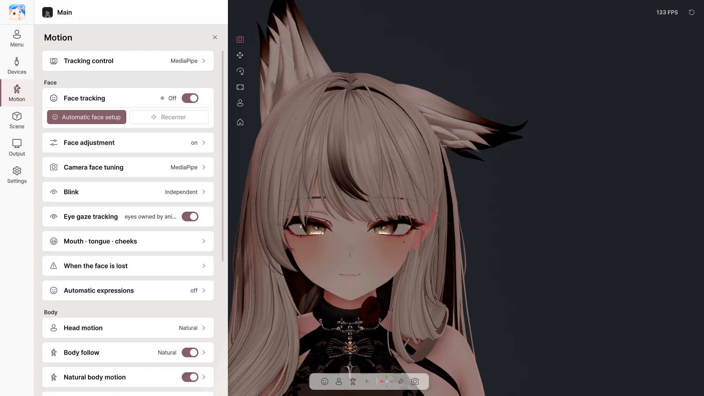

7. Motion#
On the Motion page you set how the face, body and hands move. Settings are saved separately for each avatar.

Motion page Tracking control#
Switch
What it does
Mirror (move like a mirror image) Match left and right like a mirror
Arms / Hands / Fingers Move each part with the webcam
Gestures → expressions Turn hand shapes into the avatar's gesture expressions
Face#
Item
What it does
Face tracking Turn facial expression tracking on / off
Automatic face setup Make the expressions as guided, and it adjusts automatically to your face
Recenter Make your current face direction the front
Avatar Live finds the face tracking setup your avatar already has (VRCFaceTracking, ARKit and MMD shape keys, VRChat Eye Look and LipSync) and uses it as it is. No separate setup is needed.
Automatic face setup#
Automatic face setup Following the on-screen guide, make a neutral face, close your eyes, open your mouth, talk, smile, pucker your lips, puff your cheeks, stick out your tongue and move your gaze in turn, clicking Capture each time. When finished, click Apply .
Use Back / Skip / Cancel to move between steps.
Where you look in the first step becomes the avatar's forward gaze. Look at the screen as you do when streaming.
Lighting your face well makes it more accurate.
Face adjustment#
Item
What it does
Adjust the face values Turn the adjustment values on / off
Edit left and right together Changing one side changes the other too
Smoothing Reduce jitter
Value list (eyes · brows · mouth · cheeks and nose)
Set how strongly each expression shows
Reset this value / Reset all values Back to the initial state
Camera face tuning#
Sets the reference values on the camera side. Shared by all avatars.
Slider
What it changes
Blink closed at How far you must close your eyes for them to count as closed
Mouth fully open at How far you must open your mouth for it to count as fully open
Upper teeth show from How far the mouth opens before the upper teeth start to show
Smile hides upper teeth Show less of the upper teeth when smiling
Gaze range sideways / up/down How far the eyes move
Full cheek puff at The maximum size of a cheek puff
Blink#
Item
What it does
Mode Independent (per eye, winks possible) / Synchronized (both eyes together) / Smart (together normally, separate for winks)
Blink strength / responsiveness How far the eyes close, how quickly they react
Advanced Left and right strength, closing and opening speed
Eye gaze tracking#
Makes the eyes follow your gaze.
Mouth · tongue · cheeks#
Item
What it does
Mouth meterThe current lip sync state
Auto level Adjusts the mouth size to your voice level automatically (when off, set it yourself with Sensitivity )
Mic → face tracking Whether your voice also drives the mouth in face tracking
Voice calibration Press a vowel button and pronounce it to match your voice → Save voice profile
Tongue · cheek puff#
Item
What it does
Name switch
Turn it on right now
Detect with the camera Recognize the tongue and cheeks with the camera (use after the automatic face setup)
Key Turn it on with a hotkey (While held / Press to switch )
Detect with the camera for the tongue and cheek puff is expected to work, but it is an experimental feature that has not been tested with every face and camera.
When the face is lost#
Item
What it does
Hold the last face for How long the expression is held when the face is briefly lost
Return to neutral over / Blend back over How smoothly the expression changes
Blink automatically / Move the eyes (idle look) / Look at the camera Eye movement while the face is not visible
Body#
Item
What it does
Head tracking Turn head movement on / off
Strength Subtle / Natural / Expressive
Body follow The chest and spine follow the head naturally
Natural body motion Move slightly even while still
Breathing Breathing motion
Head idle motion The head moves a little while it is not tracked
Hands · desk#
Desk Interaction#
When your hands are not visible to the camera, the avatar's hands type and move the mouse along with your real keyboard and mouse input.
🔒 Keyboard input is used only to move the avatar's hands. The characters you type are never saved, recorded or sent.
Item
What it does
Desk Interaction On / off
Hand default pose Desk height and distance, hand spacing, elbows, wrists, finger bend
Preview hand default pose Check the pose
Keyboard input reaction How much the fingers, hands and wrists move when typing
Mouse input reaction The mouse hand (right / left / auto), size of movement and clicks
Own mouse pose Save the current pose as the mouse pose
When tracking is lost#
Choose the pose when your hands are not visible: Keyboard / desk · Hold last pose · Relaxed at side · Avatar animation · My pose
Lowered hands rest too — when you lower your hands, they go to the default pose even if the camera can see them
Advanced settings#
Item
What it does
Head and body details Head rotation and position strength, body follow details
Typing style Subtle / Natural / Expressive
Face compatibility Check the face tracking setup your avatar has
Face output Auto (recommended) / Prefer VRCFT / Prefer Perfect Sync
Shape key limits Limit the maximum value of each shape key